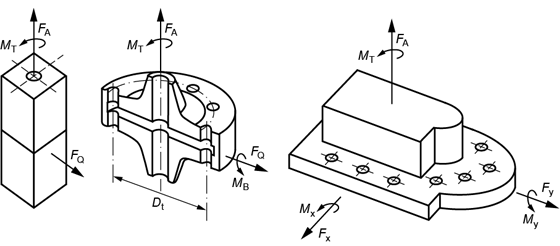

|
|
|


运行数据
在选项卡中输入运行数据。在该选项卡中，您可以选择以下螺栓连接配置之一：
- 承受轴向载荷的螺栓连接（单螺栓）
- 承受轴向载荷和剪切力的螺栓连接（单螺栓）
- 承受扭矩和力的法兰连接（多螺栓）
- 任意螺栓位置的多螺栓连接
- 根据 FEM 结果对螺栓进行校核
VDI 2230 假定影响螺栓连接的运行力为已知。您可以根据在 KISSsoft 中选择的配置输入外力和扭矩。在包含多个螺栓的配置中，KISSsoft 使用针对整个连接输入的数值来计算单个螺栓的轴向力和预紧力。
对于承受剪切载荷的螺栓连接，该剪切载荷由被连接件之间的摩擦力承受。摩擦力由摩擦系数和预紧力决定。随后，扭转力矩施加在摩擦半径所在位置。该半径由被夹紧零件（连接体）的尺寸确定。

图 42.1：螺栓连接配置：1/2、3 和 4
Operating data
Enter operating data in the tab. In this tab, you can select one of these bolting configurations:
- Bolted joint under axial load (single bolt)
- Bolted joint under axial load and shearing force (single bolt)
- Flange connection with torque and forces (multiple bolts)
- Multi-bolted joint with any bolt position
- Proof for bolts with FEM results
VDI 2230 assumes that the operating forces that will affect the bolted joint are already known. You can enter external forces and torques, depending on which configuration you select in KISSsoft. In configurations with several bolts, KISSsoft uses the values input for the entire joint to calculate the axial force and the pretension force for an individual bolt.
For a bolted connection under shear load, this shear load is received by the friction force between the bolted parts. The friction force is determined by the coefficient of friction and the pretension force. The torsional moment is then applied at the location of the friction radius. This radius is determined from the dimensions of the clamped parts (connecting solids).
Figure 42.1: Bolting configurations: 1/2, 3 and 4